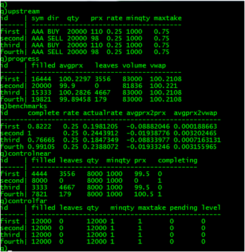

This series looks at building a near full-scale application in q and, in the process, tries to answer questions on the amount of code a q application requires, and how that code can be organised so that it is both comprehensible and straightforward to change. The target application is a participation strategy and some of its associated testing framework.
In this installment the "near" tactic is added to the participation strategy. Previously in this series: the "far" execution tactic. Next: market trials.
Looking ahead, here is the same test as in the previous installment, but with both "far" and "near" execution tactics. To get to this stage required eight orders from the user session.

Note how the average prices, avgprx, are now closer to VWAP. A view, benchmarks has been added to the strategy to give a clearer view of how the orders perform against the target participation rate and various prices. Since all the user session orders hit the ask side of the book, performance is skewed for buys and sells: the slippage from VWAP ranges from 1 - 7bps for buys to 32bps for sells.
Testing multiple execution tactics and multiple orders requires more power tools. The user.q script is now extended to load another script, player.q which can enter a table of orders. Inside a user session, a table can be loaded and each row played every 50 milliseconds with the following statement:
play [`:/kdb/qx/player.csv; 50]
player.q uses the built-in q timer function .z.ts and the timer command system "t" (more often typed as \t on the command line). The play function can accept either a file name (a symbol) or a table: the table is held in the .player context while it is being played.
This script helped discover an overlooked defect with id's in matching within qx.q, fixed in this installment.
The implementation of the "near" tactic closely follows the pattern of far.q, although the rules are slightly simpler. Recall that "near" pegs a single downstream for each upstream order allocation in the control table, controlnear. There are a couple of differences from the specification.
leaves less the quantity already on the book, which can be computed from the downstream orders. Otherwise the tactic will overcommit.
The amount of decision making now inside the strategy means more instrumentation is needed. near.q uses an "alarm" concept built into participation.q to record significant events in a table, via an upd function of course.
All allocations are made through the upd pattern, passing a list of id's that need to be allocated. Allocations are made in multiples of minqty, as specified. The size of the multiple is currently fixed, likewise the threshold at which further allocations are made. These will be examined in the market trials. One aspect not yet implemented is the transfer of quantity from "near" to "far".
As mentioned above, user.q now loads the player script and qx.q has a defect fixed. The other changes are:
global.q to provide a function that gives a performance measure relative to direction: numbers within or improving on the benchmark are always negative.
tactic.q has an extra required column for the .tactic.left function dictionary.
participation.q and far.q have the additions for alarms, benchmarks and, for the strategy only, deciding allocations for new orders and when fills are received.
All other code can be downloaded through the links in the section below.
This installment has added 30% more lines of code:
| Lines of code | ||
|---|---|---|
qx.q | 111 | |
participation.q | 97 | |
marketmaker.q | 72 | |
far.q | 65 | |
near.q | 55 | |
allocation.q | 19 | |
schema.q | 18 | |
filter.q | 18 | |
user.q | 13 | |
player.q | 12 | |
tactic.q | 11 | |
seq.q | 9 | |
global.q | 6 | |
member.q | 4 | |
util.q | 3 | |
process.q | 2 | |
| 515 |
The ratio of application code to testing code is now 60:40.
| 1. | www.kx.com | |
| 2. | Further updates, and more q code, can be found at code.kx.com. This is a secure site: for browsing the user name is anonymous with password anonymous. |